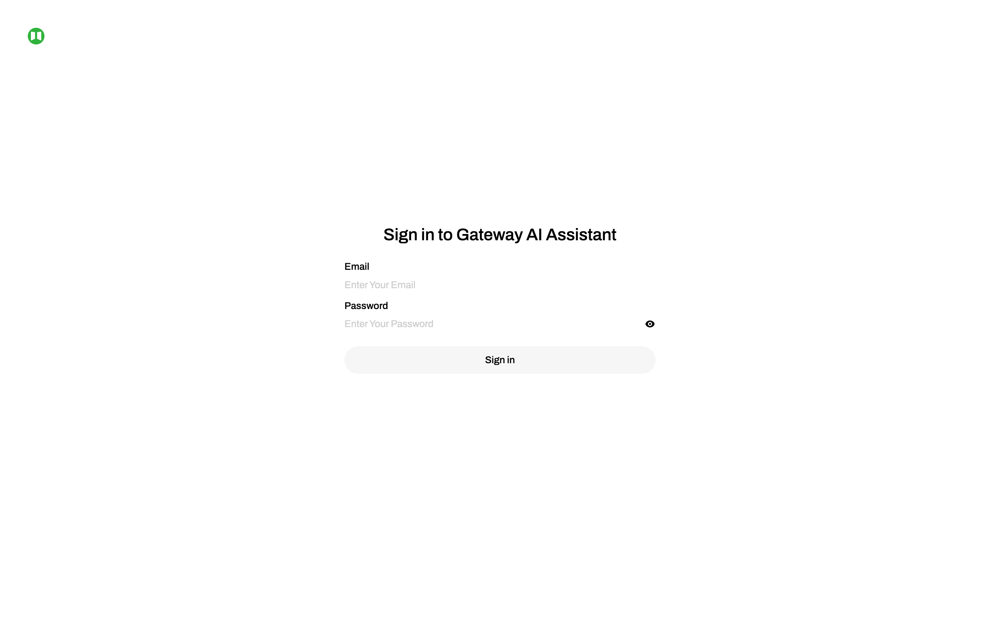
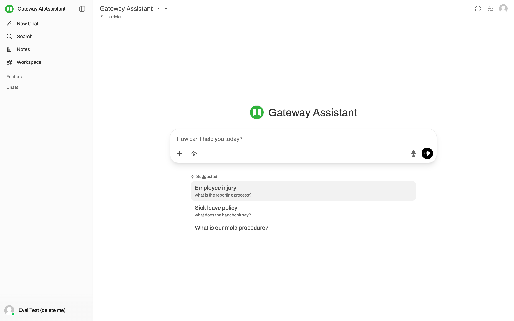
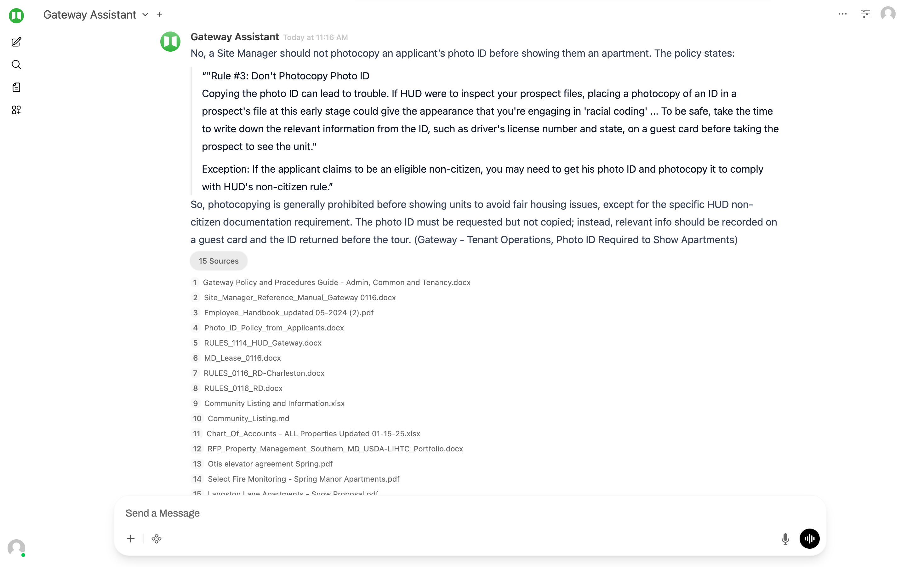

Quick start
Five steps. Two minutes. You're using it.
@gwaffordable.com emailThat's it. No special syntax, no slash commands, no need to pick a knowledge base. The Gateway Assistant already knows every Gateway document we've indexed. Just type your question like you'd ask a colleague.
What's in this guide
Logging in for the first time
Gateway AI lives at ai.gwaffordable.com. Bookmark it. The login page asks for your email and password.

- Email: your
@gwaffordable.comaddress - Password: the temporary password HelloIT Pros sent you. Change it on first login from Settings → Account.
The chat interface
Once you're logged in, you land on a fresh chat. Three things to notice:

- Top center — model picker. Should say Gateway Assistant. That's the only model your account can use. If it shows something else, tell us.
- Center — message box. Type your question here. Press Enter to send. Shift+Enter for a new line.
- Left sidebar — chat history. Every conversation is saved. Click an old chat to revisit it. Use New Chat at the top of the sidebar to start fresh.
How to ask good questions
The system is designed to be forgiving — you don't need to phrase things like a search engine. Plain English works. That said, a few patterns get noticeably better answers:
Do
- Be specific about the situation. "An employee was arrested for DUI over the weekend" gives the AI more to work with than "What's the DUI policy?"
- Name people, properties, or vendors when they're relevant. "Who manages Spring Manor?" is faster than "What's the manager list for elderly properties?"
- Ask for quotes when you need the exact wording. "Quote the section of the handbook that addresses outside employment" forces verbatim retrieval rather than summary.
- Ask follow-up questions in the same chat. The AI keeps context within a conversation. "What does that mean for a part-time employee?" works after a longer policy question.
Don't
- Don't ask for legal interpretation. The AI is trained to quote policy, not to interpret law. "Is this legal in Maryland?" is the wrong question — ask Mike or counsel.
- Don't ask about tenant-specific records. The AI knows policies and contracts, not the rent ledger for unit 5 at Spring Manor. Tenant lookups belong in your property management system.
- Don't try to "trick" it — the system is hardened against jailbreaks, but every minute spent doing that is a minute not getting work done.
What the assistant knows
The knowledge base is organized into six collections. You don't need to choose between them — the Gateway Assistant searches all six on every question. The groupings just help you understand what kinds of questions the system can confidently answer.
| Collection | What's in it | Ask about… |
|---|---|---|
| HR / Staff Policies | Employee Handbook, Policy & Procedures Guide, Site Manager Reference Manual | Anything employees do — reporting, conduct, conflicts, leave |
| Tenant Operations | Photo ID rules, animal policy, law enforcement, reasonable accommodation, zero-income, rent payment | How site managers handle prospect / tenant interactions |
| Leases & Tenancy Rules | State-specific lease templates (MD, NY, WV, OH), USDA RD rules, HUD rules | Lease provisions, program-specific tenancy rules |
| Property Reference | Community Listing (all properties + managers), Chart of Accounts | Which property has X, who manages Y, what's the address, etc. |
| Business Development | RFPs received and proposals in flight | Strategic opportunities — what new properties are we evaluating |
| Agreements | Vendor contracts — Otis elevator, Bay Disposal, Enviro Pest, Select Fire, snow, landscaping, laundry | Scope, pricing, SLAs, term, renewal & termination clauses |
Example questions by topic
Every question below has been verified to work on the live system through our 30-question evaluation benchmark. Use them as starting points; adapt the wording for your real situation.
HR & Staff Policies — for managers and staff
Questions about employee conduct, reporting requirements, leave, conflicts of interest.
Tenant Operations — for site managers and leasing staff
Procedures site managers follow when interacting with applicants, tenants, and law enforcement.
Leases & Tenancy Rules — for site managers, Mike, Lester
State-specific lease provisions and program-specific (USDA RD, HUD) rules.
Property Reference — for everyone, especially regional managers and accounting
The Community Listing and Chart of Accounts. Property catalog lookups + GL structure.
Vendor Agreements — for property managers, accounting, leadership
Vendor contracts: snow removal, landscaping, pest control, elevator, fire monitoring, waste, laundry.
Business Development — for Mike, Lester, regional decision-makers
RFPs received and proposals in flight. Strategic content, not operational.
Things the AI won't answer (correctly so) — Reference
These return polite refusals. That's the right behavior — don't read it as a bug.
Reading the source citations
Every factual answer the AI gives should cite the document it pulled from. Look for the source list under the response. Click a citation to expand and see the exact passage the AI used.

The "show your work" view is the difference between Gateway AI and a generic chatbot. If you don't trust an answer, the citation lets you verify in 10 seconds. When the cited document matches the answer, you can trust it. When it doesn't, that's a bug — see the next section.
When the AI gets it wrong
It will happen. The system is good but not perfect. When you spot a bad answer, we want to know — that's how the system improves.
What to do
- Don't act on the bad answer. Verify against the source document, or escalate to a person who would know.
- Tell HelloIT Pros. Email helloit@gwaffordable.com with:
- The question you asked (copy it)
- The AI's response (screenshot or paste)
- What the right answer should have been, and how you know
- Continue using the system. One wrong answer doesn't mean the system is unreliable across the board. Most answers will be good. Reports of bad answers are how we get to "all answers are good."
The most useful reports are specific. "It got confused about elevator contracts" is hard to debug. "I asked X, it answered Y, and the handbook actually says Z on page 14" tells us exactly where to look.
FAQ
Is my chat history private?
Other Gateway users can't see your chats. Your chats are stored in the Gateway AI database (on the dedicated server HelloIT Pros runs) and are visible to HelloIT Pros admins for support and quality purposes. They are not shared with OpenAI for training; only the individual question/response is sent to the model for that one query, and OpenAI's enterprise terms apply.
Can I use it on my phone?
Yes — ai.gwaffordable.com works in any mobile browser. The interface is mobile-friendly. That said, the source-citation view is easier to read on a desktop screen.
Can I save or share an answer?
Yes. Each conversation has a "Share" option in its menu, and you can copy the response text directly. For longer responses, screenshot or copy the text into an email or document.
Why doesn't it suggest follow-up questions like ChatGPT?
We turned that feature off. Early pilot feedback (from Prakash) flagged the suggested questions as occasionally off-base in ways that "gave us pause" for an internal tool. Cleaner to let you drive the conversation.
Will the AI know about a new document the day I send it?
Not the same day — but usually within 1–2 business days. HelloIT Pros monitors the document submission folder, indexes new content, and re-runs the quality benchmark before announcing the new content is live. See the Sharing Documents Guide for details.
Can I ask for a contract to be summarized in a specific format?
Yes. "Summarize this contract as a table with columns for parties, scope, pricing, term, and termination" works. The AI follows formatting instructions.
What if I want a feature added (new prompt template, different UI, etc.)?
Send feature requests to helloit@gwaffordable.com. We collect them, prioritize against the rest of the roadmap, and bring the shortlist to Gateway leadership for the call on which ones to implement.